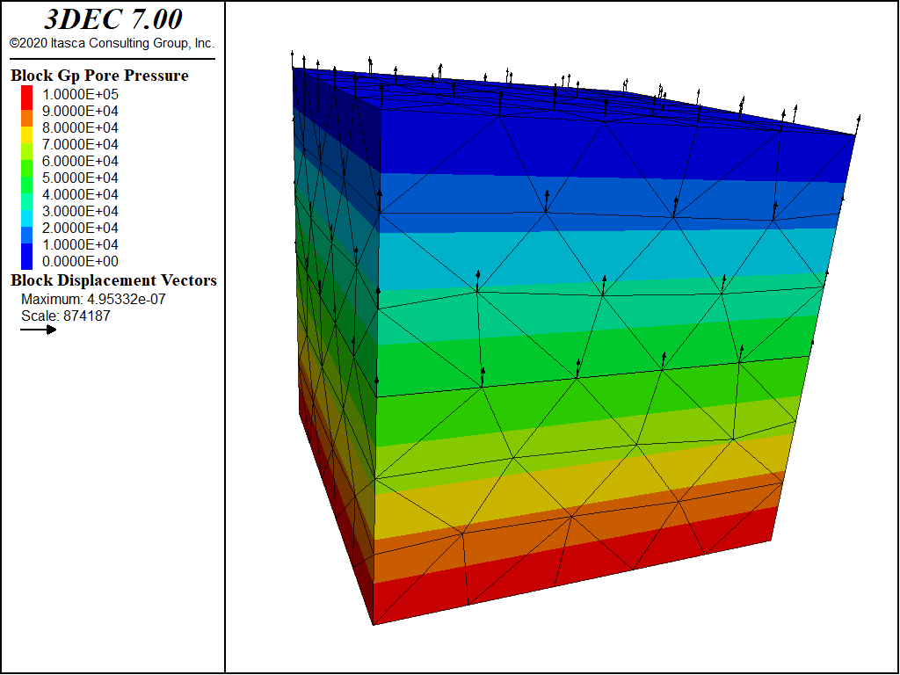

孔隙压力与有效应力
引言
地质材料的孔隙或裂隙中的流体可能具有一定的、大于零的压力。本手册使用孔隙压力这一术语，尽管在岩石中可能并不存在传统意义上的孔隙，而是含有流体的小裂隙。正的孔隙压力产生的有效应力比总应力具有更小的压性。正是该有效应力用于判断塑性材料是否破坏（或弹性固体是否可能破坏）。接触上的有效法向应力也用于判定节理是否破坏（受拉或受剪）。因此，孔隙压力的影响在 3DEC 建模中至关重要。
定义
在饱和材料中，应力一部分由固体骨架承担，一部分由孔隙水承担。两者共同承担的应力为总应力，仅由固体部分承担的应力为有效应力。太沙基有效应力定义为：
式中，\(\sigma_{ij}\) 为总应力，\(p\) 为孔隙压力，\(\delta_{ij}\) 为克罗内克符号。
也可以用比奥理论（Biot 1956）定义有效应力，但 3DEC 目前尚未实现该做法。
类似地，节理上的有效法向应力由下式给出：
式中，\(\sigma_n\) 为总法向应力。
3DEC 中的孔隙压力
即使未开启流动计算，3DEC 模型中也可以存在孔隙压力。若未给出 model configure matrixflow 命令，则不能进行流体流动分析，但仍可在网格点上指定孔隙压力。在此计算模式下，孔隙压力不发生变化，但使用塑性本构模型时，仍可能由有效应力状态控制而发生破坏。该模式下不需要孔隙度和渗透率等流体属性，也不需要流体边界条件。
可通过 block gridpoint initialize pore-pressure 命令、block insitu pore-pressure 命令或 block water table 命令在网格点处指定孔隙压力分布。block insitu pore-pressure 命令和 block water table 命令还会向节理接触赋予压力。
若使用 block water table 命令，程序会在给定的地下水位以下自动计算静水孔隙压力分布。此时还必须指定流体密度（block fluid property density）和重力（model gravity）。
在这两种情况下，网格单元孔隙压力均由网格点值平均得到，并用于计算本构模型所需的有效应力。在这种计算模式下，计算体力时不会自动考虑流体的存在：用户必须分别为水位以下和以上的介质赋予湿密度和干密度。
另请注意，孔隙压力变化时网格单元中的总应力并不会调整。因此，在无节理的弹性材料中升降地下水位没有影响（孔隙压力仅用于计算可能发生的破坏）。然而，当存在节理时，孔隙压力会在每个子接触上施加法向力，因此孔隙压力变化时可在节理上观察到位移。该力的大小可用 block.subcontact.force.pp FISH 函数求得。
block gridpoint list pore-pressure 和 block zone list pore-pressure 命令分别输出网格点和网格单元的孔隙压力。block contact list pore-pressure 输出子接触的孔隙压力和流体力。
下面给出一个简单示例。
关于使用 block water table 命令的说明
给出 block water table 命令时，当前已存在的任何地下水位都不会被删除。这意味着新地下水位以下的网格点会被赋以新的孔隙压力，而位于新地下水位以上、但低于已有地下水位的网格点将保留非零孔隙压力。因此，若要模拟地下水位下降，需要三个步骤。
- 用 block water table clear 命令删除现有的地下水位。
- 用 block gridpoint initialize pore-pressure 0 命令把网格点孔隙压力重置为零。
- 用 block water table 命令建立新的地下水位。
注意，给出设置地下水位的命令时，子接触中的孔隙压力会自动设为零，因此不必手动将其置零。
无流动算例
建立一个 10 m 的立方体六面体块，其中部有一条水平节理。模型在重力荷载下达到平衡，且不含孔隙压力。随后把地下水位提升至地表，使整个模型产生孔隙压力，然后再次求解。从图 1（Figure 1）可见，孔隙压力随深度增加，且顶部块体因孔隙压力变化而向上位移。这是因为节理上的压力变化产生了向上的作用力。底部块体没有移动，因为在关闭流体流动配置时，孔隙压力的变化不会影响无节理弹性材料的位移。
注意，对于孔隙度非零的材料，在提升地下水位时应按下式调整密度，以计入饱和度的变化：
式中，\(\rho_d\) 为干基质的密度，\(\rho_f\) 为流体密度，\(n\) 为孔隙度。


图 1：无流动模型中的孔隙压力与位移。
数据文件
model new
model random 10000
model large-strain off
;
; 创建长方体
block create brick 0 10 0 10 0 10
;
; 添加水平节理
block cut joint-set origin 0 0 5 dip 0 dip-direction 0
;
; 划分网格
block zone generate edgelength 2.
;
; 材料参数
block zone cmodel assign elastic
block zone property density 2650 bulk 1e10 shear 7e9
block contact jmodel assign mohr
block contact property stiffness-normal 1e11 stiffness-shear 1e11
;
; 边界条件
block gridpoint apply velocity 0 0 0 range position-z 0
block gridpoint apply velocity-x 0 range position-x 0
block gridpoint apply velocity-x 0 range position-x 10
block gridpoint apply velocity-y 0 range position-y 0
block gridpoint apply velocity-y 0 range position-y 10
; 重力
model gravity 0 0 -10
;
; 求解，不考虑流体
model solve ratio 1e-7
;
;
block gridpoint initialize displacement 0 0 0
;
; 现在将地下水位提升至地表
block fluid property density 1000.0
block water plane origin 0 0 10 normal 0 0 1
;
model solve
;
;
| 这些内容对您有帮助吗？… 版权与免责声明 | FLAC3D © 2019, Itasca | 原文更新于 2020 年 10 月 8 日 |